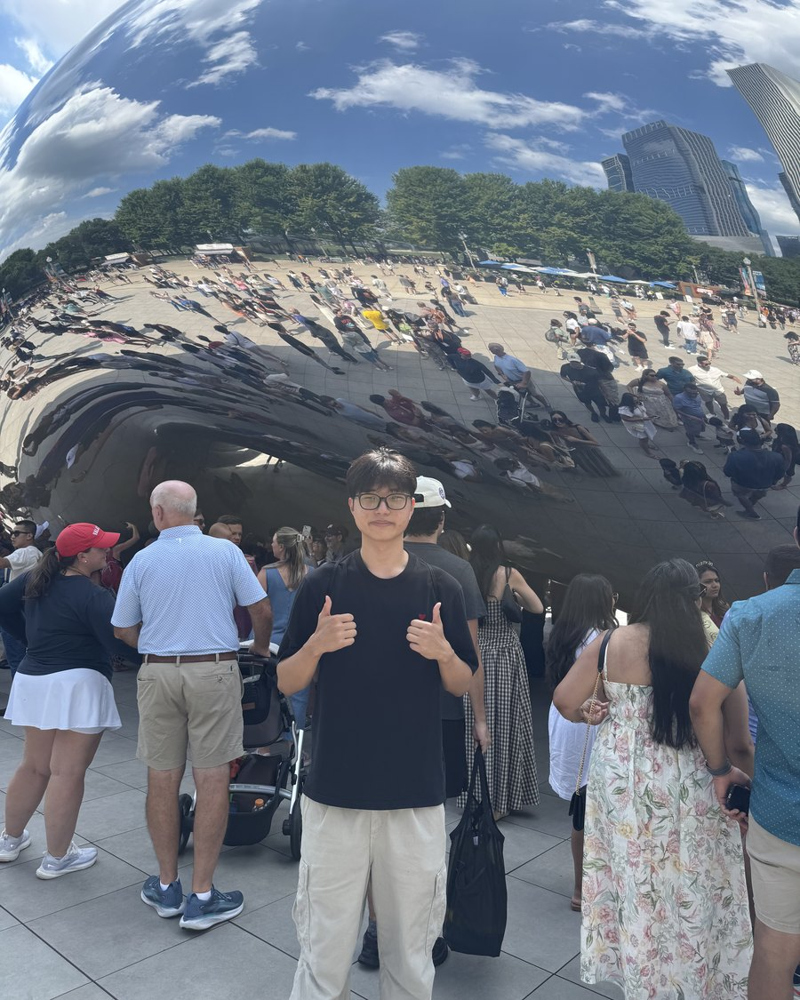

For me, physics has been my passion for a long time.
From a young age I had an affinity with numbers, and used them as tools to understand the world around me. It was the simplest yet the most beautiful way to describe everything around me. That desire to understand and explain the real world has driven me to the subject, and into many different occasions to study it better. And, of course, I seek a better understanding in the future.
My obsession with physics does not put me any further from the other parts of myself. I also enjoy creative work, whether it is music, literature, or movies. I love to express myself in any form and to immerse myself in different worlds. Every now and then I cry over a movie, spend hours reading books, make music, and write anything that comes into my mind.
I would not call myself talented, exactly. Although I love music, I have failed a few auditions, and there have been plenty of times I was not satisfied with myself. The same goes for volleyball — passion alone could not make me a starting varsity player. But that does not change the fact that I feel joy, and feel like myself, when I am doing those things. I also met a lot of great people doing what I like, which is worth more to me than any audition or match.
I want to study physics in more depth. I take the initiative to study more of it on my own, but an individual can only go so far. I would love to be in a community where everybody is passionate about their studies and I can discuss different problems with them — interactive lectures, labs, discussions. That is why I want to continue studying at university. Also, great physics happens on blackboards, and I don’t have a blackboard at home.
Résumé, PDF ↓